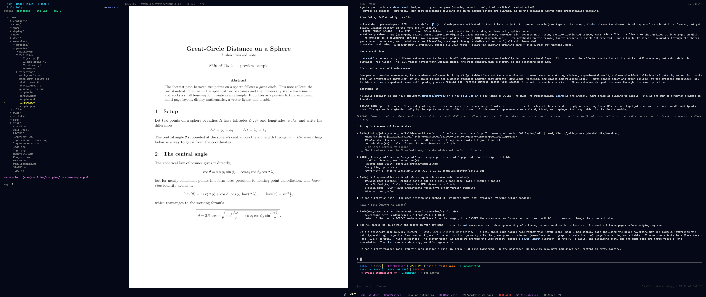
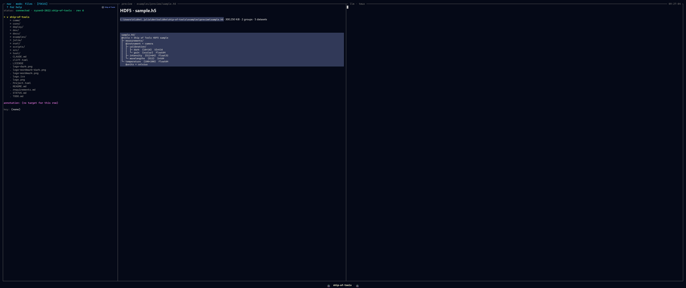

Previews
When you cursor a file in any mode, the preview pane renders it at the fidelity appropriate to its type. Every preview goes through one dispatch path: a FileType plugin claims the path with matches and returns a PreviewPayload from preview. The payload's mime tells the frontend which renderer to use; the bytes are opaque to Rust. Adding a format is a Julia-only change — see The Dispatch ABI and Writing a FileType Plugin.

A paged PDF preview.
An HDF5 file rendered by the demo external plugin — a preview added with zero Rust changes.Built-in file types
These plugins ship under julia/plugins/ and the kernel loads them at startup. Each is a built-in that travels the exact same dispatch path a third-party plugin would.
| Extension | Plugin | MIME | Representation | Fidelity |
|---|---|---|---|---|
.jl | ShipToolsJuliaSource | application/vnd.sot.tokens+json | token spans (kind + text) from JuliaSyntax.jl | syntax-highlighted source, no client-side re-tokenizing |
.md, .markdown | ShipToolsMarkdown | text/markdown | raw UTF-8 bytes | rendered markdown (comrak + cosmic-text), including inline math |
.toml | ShipToolsTomlDoc | text/x-toml | raw UTF-8 bytes | code/text renderer |
.json | ShipToolsJsonDoc | application/json | raw UTF-8 bytes | plain text today (pretty-print / colour planned) |
.txt | ShipToolsPlainText | text/plain | raw UTF-8 bytes | plain text renderer |
.pdf | ShipToolsPDFFile | image/png (+ page, page_count extras) | one poppler-rasterized page | paged; n/p turn pages, rasterized backend-side to fit the pane |
.mp4, .webm, .mov, .mkv, .m4v | ShipToolsVideoFile | image/png | a single ffmpeg poster frame | still poster in the pane; o opens playback in the browser |
PNG (and other raster images) render directly through the frontend's image quad path — the same path the PDF and video plugins reuse by returning image/png.
A few notes on the table:
- Julia source is tokenized on the kernel side into
{spans: [{text, kind}]}, so the frontend colours it without parsing Julia. The token kinds map to the frontend's colour set (keyword,comment,string,number,op,punct,type,ident,text); concatenating every span reproduces the file byte-for-byte. - PDF is the one format whose preview takes a page parameter — the only built-in that addresses which part of a file to render. Pages rasterize on the host where the file lives (poppler's
pdftoppm/pdfinfo), matching the backend-side-decode model. - Video deliberately does not play in the pane. A native player (HTML5
<video>with hardware decode) beats streaming decoded frames over a socket, so the pane shows a poster andopops the real file out to the browser.
When an external tool is missing (ffmpeg for video, poppler for PDF), the plugin returns a text/markdown note explaining the gap — never a silent blank pane.
Opens in the browser, not the pane
Some formats are interactive HTML and belong in a real browser rather than a static pane. Consistent with the video policy, these are popped out to the OS browser over a forwarded loopback port rather than rendered in-pane:
- HTML (
sample.html) — opened in the browser. - Pluto notebooks (
pluto_demo.jl,pluto_demo2.jl) — opened as live Pluto sessions in the browser. As.jlfiles they still get a syntax-highlighted source preview in the pane. - Quarto documents (
quarto_julia.qmd) — the rich rendered form opens in the browser; the source previews as text in-pane.
These all follow the same "rich/interactive content lives in the browser" policy.
Capturing a preview region for the LLM
For raster image previews you can zoom in, then press c to crop the visible region and hand it to the orchestrator LLM in the pane — "what's the artifact here?". The crop is taken from the source image on the backend and delivered to the in-pane agent, so the LLM sees exactly the region you are looking at.
Formats added by external plugins
File types do not have to be built-in. The HDF5 worked example ships as a separate package and claims .h5 (see the sample.h5 fixture), demonstrating that the full preview surface is reachable from outside core with no changes to the kernel or the frontend. This is the same path every built-in above travels — the point of shipping core as a plugin to itself.
Adding a new file type
A FileType plugin is small: a subtype, a matches predicate, and a preview that returns a PreviewPayload with the right MIME.
module PngPreview
using ConceptExplorerCore
struct PngFile <: FileType end
ConceptExplorerCore.matches(::Type{PngFile}, path) =
endswith(lowercase(path), ".png")
ConceptExplorerCore.preview(::Type{PngFile}, path) =
PreviewPayload("image/png", read(path))
endusing PngPreview and PNGs are previewable — no registration step and no Rust change. For the full contract and discovery rules see The Dispatch ABI and Writing a FileType Plugin.